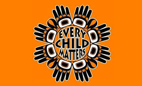

Backstory
Why Are There so Many Children
- Indigenous families in poverty have been unjustly targeted during this crisis.
- Impoverished Indigenous communities do not have the resources to fight back against the government.
- They have been disporotionately affected time and time again, revealing a vicious cycle.
- These families have been unproportionately affected by the government not only during the present but also during the 1960's with the "60's scoop" and with the times of residental schools.

What is The Issue Behind This
- The issue of there being an excessive number of Indigenous children in foster care mirrors the practices and outcomes of the "Sixties Scoop.".
- Indigenous children in the Foster care system are often not allowed to speak their mother language and are dissallowed from cultural practices.
- The "Sixties Scoop" is regarding a time during the 1960's where thousands of Indigenous children were taken from their homes by the government out of prejudice.
- The ongoing cycle of cultural loss and trauma needs to stop and can be through the completion of this Call to Action and the Canadian governments reconciliation.